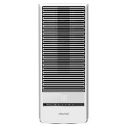
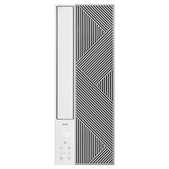
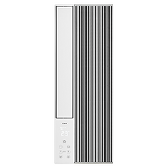
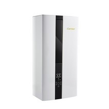
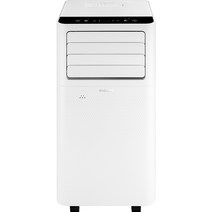

창문형 에어컨 1인가구 추천 2026 — 5~6평 원룸에 딱 맞는 4종 + 이동식 비교
5월 중순이 되면 에어컨 검색량이 급격히 오릅니다. 아직 더위가 본격적이지 않을 때 사야 배송도 빠르고 가격도 덜 오르거든요. 저도 작년에 여름 한복판에 뒤늦게 알아봤다가 2주 배송 기다리며 땀 뻘뻘 흘린 기억이 있어요.
1인가구 원룸에 에어컨을 놓을 때 가장 많이 고민하는 게 "벽걸이 에어컨이 나은가, 창문형이 나은가"입니다. 벽걸이는 성능이 좋지만 설치비 15~20만 원이 따로 들고, 전세·월세라면 퇴거 때 원상복구 문제도 있어요. 반면 창문형 에어컨은 혼자 설치 가능하고, 이사 때 그냥 떼어 가면 됩니다.
이번 글에서는 1인가구 5~6평 원룸에 적합한 창문형 에어컨 4종과, 창문 구조가 맞지 않는 환경을 위한 이동식 에어컨 1종을 함께 정리했습니다. 어떤 상황에 뭘 골라야 하는지 명확하게 알려드릴게요.
5초 요약 — 상황별 추천
| 상황 | 추천 모델 | 가격 |
|---|---|---|
| 최신 사양 + 원격제어 | 귀뚜라미 26년형 인버터 창문형 | 759,000원 |
| 전기료 절약 1인가구 | 위닉스 5.8평 인버터 2세대 | 679,000원 |
| 모던 디자인 선호 | 위닉스 5.8평 직선형 2세대 | 679,000원 |
| 가성비 최우선 | 캐리어 1등급 인버터 실외기없는 | 629,000원 |
| 창문 설치 불가 환경 | 일렉코디 이동식 에어컨 | 391,020원 |
이 표만 보고 가셔도 됩니다. 더 자세한 이유가 궁금하시면 아래로 내려가 주세요.
1인가구에 창문형 에어컨이 좋은 이유
설치비 0원, 혼자 30분이면 끝
벽걸이 에어컨의 가장 큰 장벽은 설치비입니다. 기본 설치비 15만 원에 추가 배관 공사가 붙으면 20만 원이 훌쩍 넘어요. 반면 창문형은 창문틀에 끼워 고정하는 방식으로 혼자 설치 가능합니다. 유튜브 영상 하나 틀어놓고 따라 하면 30분 안에 끝나요.
이사할 때도 간단합니다. 창틀에서 떼어 포장하면 그대로 다음 집으로 가져갈 수 있어요.
실외기 없이 창문 하나로 해결
창문형 에어컨은 실외기가 따로 없습니다. 본체 뒤쪽(창문 바깥 방향)이 실외기 역할을 합니다. 베란다 없는 원룸이나 실외기 설치 공간이 없는 구조에도 사용 가능합니다.
5평 원룸 적정 냉방 능력
1인가구 원룸 평균 면적인 5~6평(16~20㎡)에는 창문형 에어컨 표준 모델 하나로 충분합니다. 아래 제품들은 모두 이 범위에 맞춰 선정했어요.
추천 제품 4종 상세 비교
1. 귀뚜라미 26년형 인버터 창문형 — 최신 + 원격제어

- 가격: 759,000원
- 냉방 면적: 18㎡ (5.4평)
- 에너지 등급: 1등급
- 특징: 2026년형 신제품, 인버터 압축기, 스마트폰 원격제어 지원
2026년에 새로 나온 모델입니다. 인버터 압축기를 탑재해 전기료가 정속형보다 20~30% 적게 나옵니다. 원격제어 기능이 있어 외출 전 미리 켜두거나 퇴근길에 작동시킬 수 있어요.
에너지 1등급 기준 하루 8시간, 한 달 사용 시 전기요금 약 2만 원대 수준입니다. 5가지 중 가격이 가장 높지만 최신 사양과 원격제어를 원한다면 이 제품이 맞습니다.
단점: 창문형 특성상 소음이 벽걸이보다 큽니다(약 43~45dB). 수면 중 민감한 분은 참고하세요.
쿠팡에서 귀뚜라미 창문형 보기2. 위닉스 5.8평 인버터 2세대 — 전기료 절약형

- 가격: 679,000원 (정가 799,000원, 15% 할인)
- 냉방 면적: 19.1㎡ (5.8평)
- 에너지 등급: 1등급
- 특징: 인버터 압축기, 위닉스 1세대 후속
위닉스가 1세대 창문형 에어컨의 인기를 이어받아 출시한 2세대 모델입니다. 냉방 면적이 5.8평으로 귀뚜라미(5.4평)보다 약간 넓어요. 5~6평 원룸이라면 여유 있게 커버됩니다.
인버터 방식으로 설정 온도에 도달하면 압축기가 저속 운전으로 전환돼 소비전력이 줄어듭니다. 정속형 대비 월 전기료 1만 원 내외 차이가 납니다.
장점: 귀뚜라미 대비 8만 원 저렴하면서 냉방 면적은 더 넓음.
쿠팡에서 위닉스 인버터형 보기3. 위닉스 5.8평 직선형 2세대 — 같은 성능, 다른 디자인

- 가격: 679,000원 (정가 799,000원, 15% 할인)
- 냉방 면적: 19.1㎡ (5.8평)
- 에너지 등급: 1등급
- 특징: 위 2번과 성능 동일, 외관이 직선 라인 디자인
2번 위닉스 인버터 모델과 냉방 성능·가격·에너지 등급 모두 동일합니다. 차이는 디자인 하나입니다. 2번은 곡면 패널, 이 모델은 직선 라인 패널이에요. 인테리어가 모던·미니멀 스타일이라면 직선형이 더 잘 어울립니다.
어떤 걸 고를까? 성능 차이는 없으니 방 인테리어 스타일에 맞춰 선택하세요. 두 모델 모두 위닉스 AS 체계를 동일하게 이용할 수 있습니다.
쿠팡에서 위닉스 직선형 보기4. 캐리어 1등급 인버터 실외기없는 — 가성비 최강

- 가격: 629,000원 (정가 799,000원, 21% 할인)
- 에너지 등급: 1등급
- 특징: 캐리어 브랜드, 인버터, 실외기 없는 일체형
4종 중 가격이 가장 낮은 629,000원입니다. 원래 정가 799,000원에서 21% 할인 중이에요. 캐리어는 국내 대표 에어컨 브랜드로 AS 접수가 용이하고 부품 수급도 안정적입니다.
인버터 압축기 + 에너지 1등급 조합이라 전기료 부담도 최소화됩니다. 창문형을 처음 써보는 분이나 브랜드 신뢰도를 중시하는 분에게 적합합니다.
쿠팡에서 캐리어 창문형 보기창문형 vs 이동식 — 창문 구조가 안 맞는다면?
창문형 에어컨은 미닫이 창문(슬라이딩 창)에 설치합니다. 여닫이 창문이나 창문이 없는 구조에는 맞지 않아요. 이런 경우 이동식 에어컨이 현실적인 대안입니다.
일렉코디 20.8㎡ 이동식 에어컨

- 가격: 391,020원 (정가 399,000원, 44% 할인)
- 냉방 면적: 20.8㎡ (약 6.3평)
- 특징: 바퀴 달린 이동식, 설치 공사 불필요, 배기 호스만 창문 틈으로
설치 공사가 전혀 없습니다. 배기 호스를 창문 틈이나 문 틈에 연결하면 바로 작동해요. 집 안에서 위치를 바꿀 수 있어서 낮에는 거실, 밤에는 침실로 이동도 가능합니다.
창문형 대비 단점: 같은 면적 기준으로 소비전력이 10~15% 높고, 배기 호스 연결이 완전하지 않으면 냉방 효율이 떨어집니다.
| 창문형 에어컨 | 이동식 에어컨 | |
|---|---|---|
| 창문 조건 | 미닫이 전용 | 배기 호스 틈만 있으면 OK |
| 설치 난이도 | 쉬움 (혼자 가능) | 매우 쉬움 |
| 냉방 효율 | ★★★★☆ | ★★★☆☆ |
| 이동성 | 없음 (창문 고정) | ★★★★★ |
| 가격 | 629,000~759,000원 | 391,020원 |
창문형 에어컨 선택 가이드 — 구매 전 확인 3가지
1. 창문 구조 확인 (가장 중요)
창문형 에어컨은 미닫이(슬라이딩) 창문에만 설치 가능합니다. 창문을 옆으로 밀어서 여는 방식이어야 해요. 여닫이(안/밖으로 여는)나 시스템 창호에는 설치가 어렵습니다. 구매 전 반드시 확인하세요.
2. 창문 개구부 높이와 에어컨 규격 비교
창문형 에어컨 높이가 창문 개구부(열리는 공간)보다 작아야 설치됩니다. 대부분 제품이 높이 40~45cm 수준인데, 간혹 창문 개구부가 이보다 작은 경우가 있어요. 줄자로 사전에 측정해 두는 것이 안전합니다.
3. 인버터 vs 정속형 전기료 차이
인버터 방식: 설정 온도 도달 후 저속 운전 → 전기료
낮음
정속형: 설정 온도와 무관하게 항상 풀파워 → 전기료 높음
여름 3개월(6~8월) 기준 누적 차이는 1~2만 원 내외입니다. 이번 추천 4종 모두 인버터입니다.
설치 팁
- 창문 양 끝 스토퍼 확인: 에어컨 설치 후 창문이 닫히지 않도록 고정 부품을 체결해야 합니다.
- 배수 호스 방향: 응결수 배출구가 바깥쪽을 향하도록 설치하세요.
- 소음 대책: 침대 바로 옆보다 창가 구석 쪽이 소음이 덜 느껴집니다.
- 환기: 창문 일부가 막히므로 다른 창문 또는 환기구를 활용하세요.
FAQ
Q. 창문형 에어컨 혼자 설치할 수 있나요?
A. 네, 가능합니다. 제품 무게가 15~20kg 수준이라 성인 혼자 들어 올릴 수
있고, 창틀 고정 작업도 유튜브 가이드를 보면 30분 이내에 완료됩니다.
Q. 전기요금이 얼마나 나오나요?
A. 인버터 1등급 기준 하루 8시간, 한 달 사용 시 약 2~2.5만 원 추가됩니다.
정속형은 이보다 20~30% 높게 나올 수 있습니다.
Q. 창문이 여닫이인데 창문형 설치 가능한가요?
A. 어렵습니다. 창문형은 미닫이 창문 전용 설계입니다. 여닫이 창문이라면
이동식 에어컨을 권장합니다.
Q. 창문형 vs 벽걸이, 뭐가 더 나은가요?
A. 전세·월세 1인가구라면 창문형이 유리합니다. 설치비 없음, 원상복구
불필요, 이사 시 가져갈 수 있는 장점이 있습니다. 자가라면 냉방 성능과
소음 면에서 벽걸이가 낫습니다. 냉방 효율은 벽걸이가 약 10~15% 높습니다.
결론
5~6평 원룸에 에어컨을 새로 장만한다면 이렇게 정리됩니다.
- 최신 사양 + 원격제어 원하면: 귀뚜라미 26년형 (759,000원)
- 가성비 + 브랜드 신뢰도: 캐리어 1등급 (629,000원)
- 위닉스 선호, 디자인 중립: 위닉스 인버터 2세대 (679,000원)
- 위닉스 선호, 모던 인테리어: 위닉스 직선형 2세대 (679,000원)
- 창문 구조 맞지 않는다면: 일렉코디 이동식 (391,020원)
5월에 미리 사두면 여름 배송 대란을 피할 수 있습니다. 인버터 1등급 모델은 여름 성수기엔 재고가 빠르게 소진되니 지금이 구매 적기입니다.